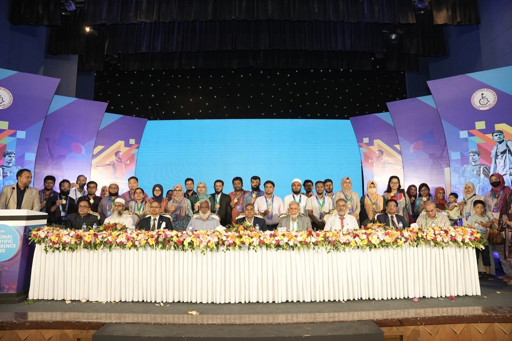
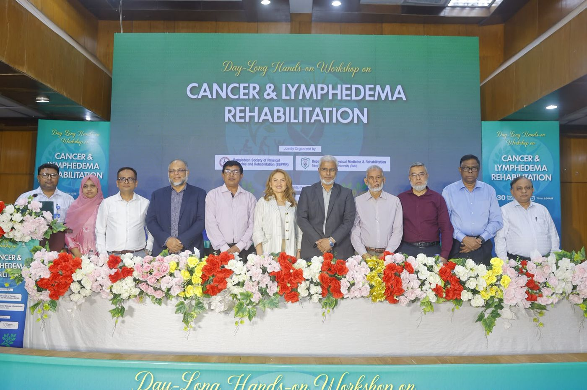
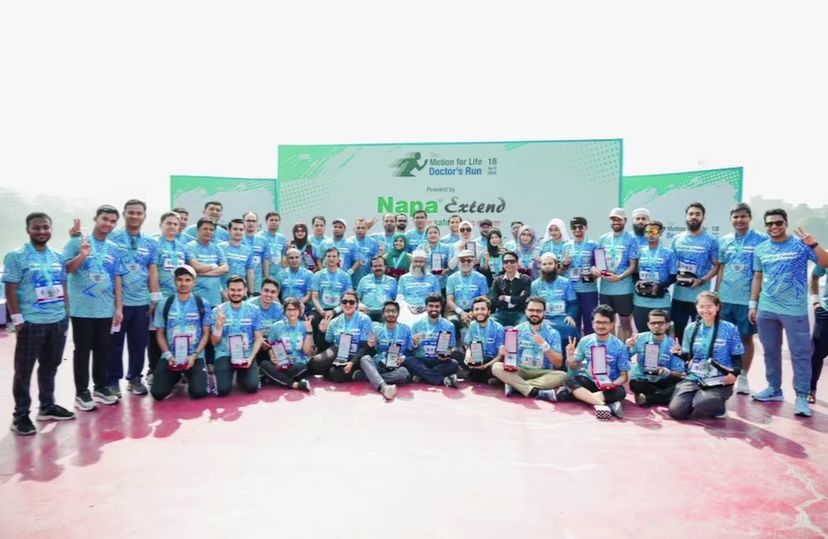
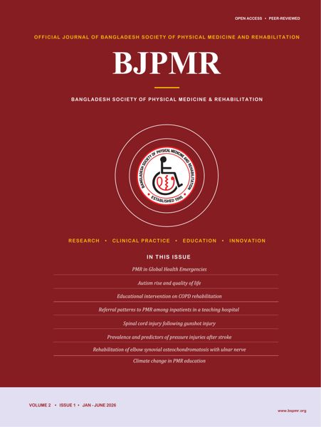

Advancing Physical Medicine & Rehabilitation in Bangladesh
BSPMR unites the country’s PM&R physicians to raise the standard of rehabilitation care — through education, research, advocacy and a nationwide professional network.

BSPMRCON 2026 — 13th National Conference
Theme: “Strengthen Rehabilitation Services in Bangladesh, Bridging with other Subspecialties and Stakeholders”
until the opening session · 9:00 AM, Dhaka
Upcoming events & workshops
Hands-on workshops, CMEs and our national conference — seats are limited, register early.


The professional home of PM&R physicians in Bangladesh
Established in 1995, BSPMR is the leading professional organisation dedicated to advancing Physical Medicine and Rehabilitation. We promote comprehensive, evidence-based and patient-centred rehabilitation care — and work with government and partners so that persons with disabilities receive the care, respect and opportunities they deserve.
- Scientific conferences, CMEs, workshops and fellowships
- Advocacy for accessible, equitable rehabilitation services
- Input to national policy for persons with disabilities
- National & international collaboration, training and scholarships
Four pillars of our work
Education & training
CMEs, hands-on workshops and fellowships that keep physiatrists at the leading edge.
Research & publication
The BJPMR journal and a member research portal to share Bangladeshi evidence.
Advocacy & policy
Representing rehabilitation medicine with policymakers and for the rights of persons with disabilities.
Community & awareness
Public programmes on disability prevention, physical activity and comprehensive rehabilitation.
Published research by our members
Verified, peer-reviewed work from Bangladeshi physiatrists — from 3D-printed orthoses to robotic rehabilitation.

Bangladesh Journal of Physical Medicine & Rehabilitation
Published twice a year, free to read and download.
Join a nationwide community of rehabilitation physicians
Apply online in minutes, pay securely, and get your membership verified by the BSPMR secretariat.
- Priority access to seminars & workshops
- Recognition & certificates from BSPMR
- Publish articles on the official portal
- Nationwide professional network
- Discounted national conference registration